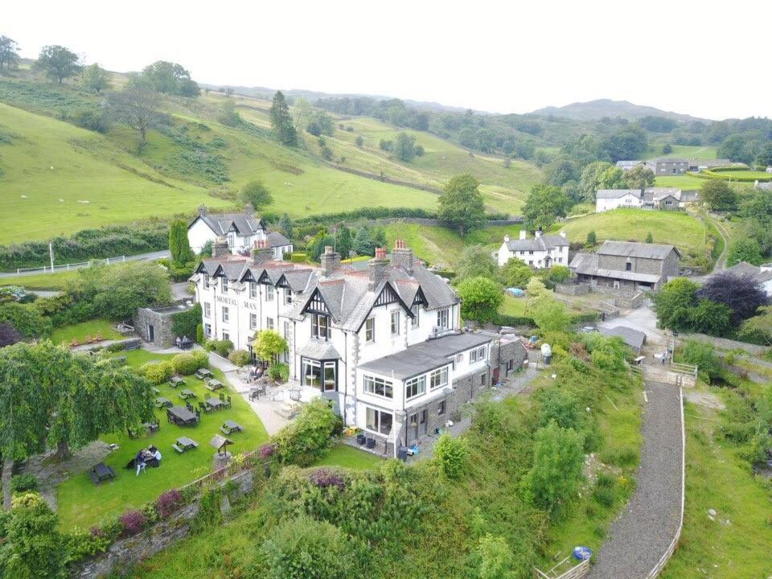
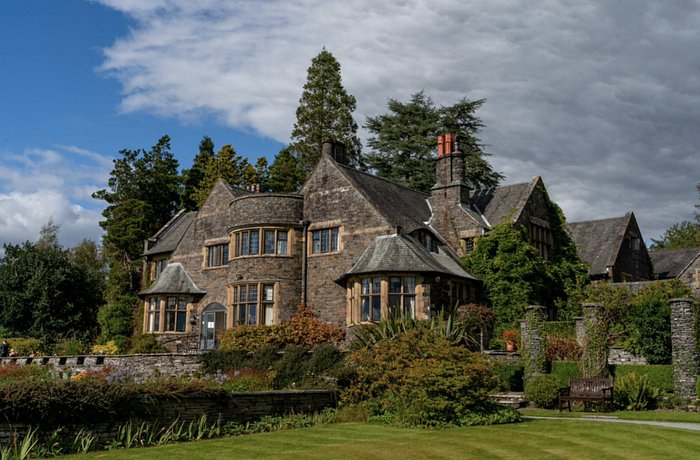

Where to stay
With limited capacity, we can sadly not offer a room at the venue to all guests on the day. However, there are plenty of places to stay local to the venue.
Some highly recommended places nearby:
The Mortal Man Inn
 Check availabilityCragwood Country House Hotel
 Check availability
You can browse all hotels nearby below: